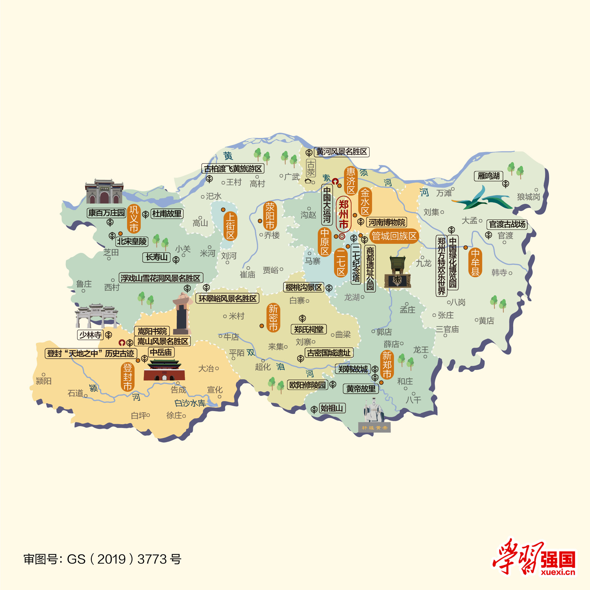

郑州地图

郑州景点
- 嵩山
- 伏羲大峡谷
- 黄河风景区
- 黄帝故里
- 中原福塔
- 雁鸣湖
嵩山，五岳之中的“中岳”，秦岭山系东延的余脉，自西向东依次有万安山、安坡山、马鞍山、五佛山、挡阳山、玉寨山、嵩山主峰、五指岭和尖山等，素有“佛教圣地、功夫之源”的美誉。
伏羲大峡谷，坐落于大山深处，是一条以典型红岩嶂谷群地质地貌景观为主的峡谷，谷内森林密布、溪水潺潺，奇峰异石、清泉飞瀑，风光秀丽、姿态万千，堪称观光胜地。
黄河风景名胜区，又称黄河水利风景区，位于黄河之滨，南依岳山，北临黄河，是地上“悬河”的起点，黄土高原的终点，也是欣赏黄河景色的最佳位置之一，并且可以领略黄 河壮美的文化艺术，被誉为黄河上一颗璀璨的明珠，享有"中华民族之魂"之美誉。
黄帝故里，为汉籍史书中记载有熊氏的族居地，也就是现在的新郑，被称为“有熊之墟”。据说黄帝从出生、战斗再到建都，都在有熊这个地方。为纪念轩辕黄帝， 汉代修建了轩辕故里祠；明代于祠前建轩辕桥；清代于祠前立轩辕故里碑，故而新郑有了“黄帝故里”的美誉。
中原福塔，又名“河南广播电视塔”，塔高268米，顶部桅杆天线高达120米，总高度为388米，是郑州市最高的建筑，也是郑州的标志性建筑，被誉为“郑州的埃菲尔塔”。
雁鸣湖，是郑汴之间最大的水域，也是黄河湿地重要的组成部分，因每年冬春两季有大量在此栖息的大雁而得名。这里有湖泊、森林，还有许多小动物，素有“郑州后花园”之美誉。
为了获得最佳浏览效果，建议在分辨率大于或等于 1024*768 的屏幕下浏览网站 建议浏览器
©2023 - 2024 濮阳职业技术学院
地址:濮阳市华龙区濮大8号楼427室 联系电话:13462912757